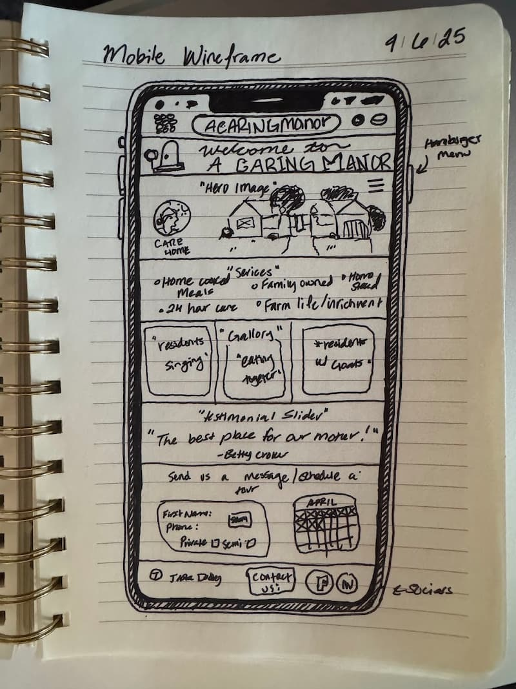
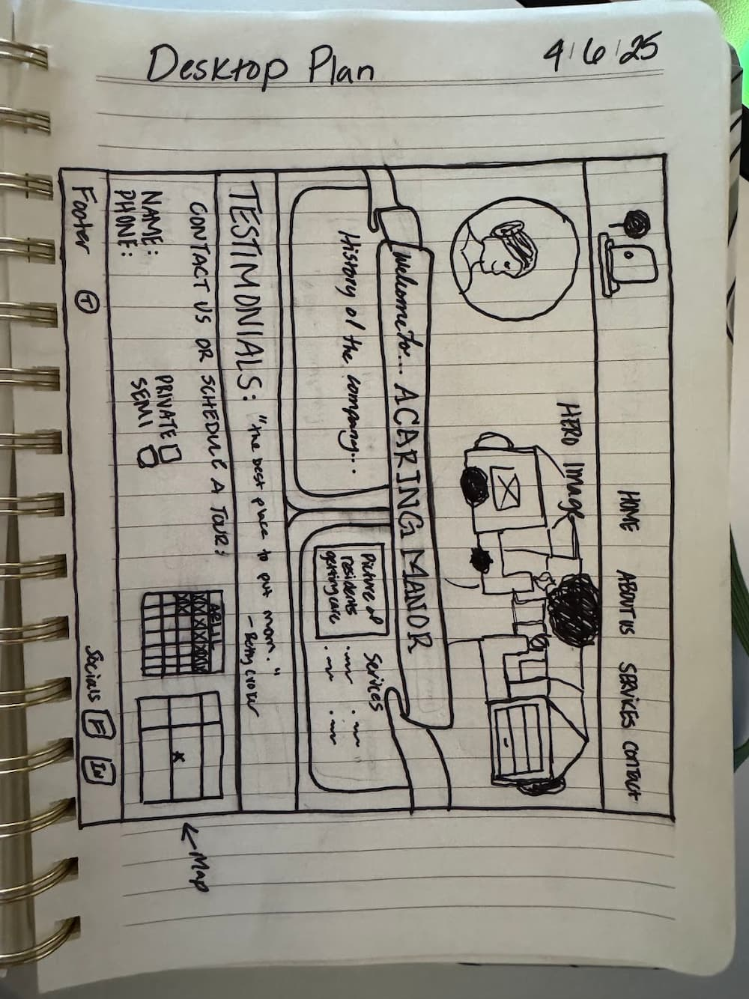

Site Name
A Caring Manor – This name is the actual name of my parents’ licensed care home. It reflects the compassionate, home-like environment they’ve created for their elderly residents and is already recognized in our community.
Site Purpose
This site will serve as an online brochure and contact point for A Caring Manor. It will highlight the services offered, provide photos of the facility, include testimonials, and offer a simple form for families to get in touch or schedule a tour.
Scenarios
- What kinds of services and amenities does A Caring Manor provide for its residents?
- How do I schedule a tour or speak with someone about availability?
Color Schema
Primary Color: #6CA0A9 (Manor Blue) – used for headers, navigation, and accents.
Secondary Color: #A3B18A (Sage Green) – used for background accents and section borders.
Base Background: #FDFCF7 (Cream) – used for the main background to keep it light and airy.
Text Accent: #857C74 (Warm Taupe) – used for body text and subtle details.
Typography
Primary Font: 'Quicksand', sans-serif – used for all body text to maintain readability and a friendly tone.
Header Font: 'Playfair Display', serif – used for headings to bring elegance and timeless warmth.
Wireframes
Mobile View: A simplified layout with the logo and hamburger menu at the top, followed by a hero image, services stacked vertically, a testimonial, and contact info. Designed for quick scroll access on phones.
Desktop View: A wider layout with a horizontal nav, centered logo, and multi-column sections. The hero image is prominent, followed by side-by-side services, a testimonial banner, and a contact form next to a map for easy interaction.
